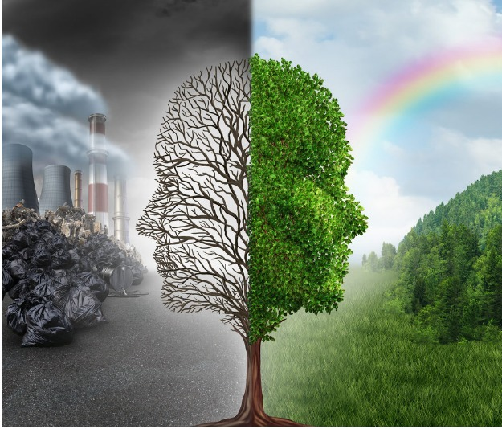

ENVIRONMENT
Rainforests of the Sea turn Ghostly White
When we think of corals, we think of the Great Barrier Reef. Australia has implemented certain reforms that protect the reef such as the “reef 2050 long-term sustainability plan” being implemented from 2015 to 2050, as the Australian government’s response to UNESCO’s World Heritage Committee’s recommendation to protect the corals. Along with this, the Australian government has implemented new ship routes which avoid the area where the coral reefs are sensitive to protect them. This has been agreed by the IMO Sub-Committee on Navigation..., Communications and Search and Rescue (NCSR), meeting for its 2nd session. (9-13 March). Coral are complex organisms that live in a symbiotic relationship with algae, providing them with a home in their skeleton. During the day, the algae produce food for the plant by photosynthesis but at night the coral polyps the organisms that makeup coral come out and feed on small organisms. If untouched and unaffected by human actions, corals are “immortal” until a parrotfish feeds on it or it “fights” another coral. This is what happens when everything is normal, but when the temperature rises or decreases just a few degrees things start going wrong. It might only be by a few degrees but similar to the human body, when the temperature rises a few degrees things go wrong. The algae in the coral stop producing food, so the coral ejects the algae and loses its main source of food and along with it, it is colour and this is called “coral bleaching”. When this happens, we can see through the transparent tissues and see the coral skeleton. At this stage, it might look beautiful but now the coral is completely dependent on the polyps for their food . After a while, the coral dies out of starvation and turns “fuzzy” as its tissues disintegrate. This is how the corals that lived for hundreds of years die. In 2005, the U.S. lost half of its coral reefs in the Caribbean in one year due to a massive bleaching event The Great Barrier Reef has experienced five mass bleaching events – 1998, 2002, 2016, 2017 and 2020 – all caused b y rising ocean temperatures driven by global heating The main reason for the bleaching is rising temperatures i n the ocean caused by global warming. The oceans act as a si nk and absorb the heat. In the last decade (which is a smal l-time for corals) reports popped up saying corals are turning “Neon”. Researchers stated this was a type of “sunscreen” the corals started producing to protect the algae from the excessive light and survive the stress and recover after the temperatures recede but prolonged stress kills them. Right now, the only way to protect corals is the same as to prevent glaciers and ice caps from melting, which is to stop global warming.
Let's Turn The Burning Earth Green
“If we heal the earth, we heal ourselves.”
-Wangari MaathaiWe all use the word ‘environment’ a lot, but most people don't know that the word environment is derived from the French word “environ” meaning to circle or surround in which organisms or groups of organisms live. The natural environment encompasses all living and nonliving things occurring naturally, meaning in this case not artificial. This environment encompasses the interaction of all living species, climate, weather and natural resources that affect human survival and economic activity.
 ...
Environmental pollution is not a new problem, yet it remains the world’s greatest problem facing humanity and the leading environmental cause of death. Many climate activists, such as Greta Thunberg and Margaret Thatcher, took steps to stop this, but man’s activities prevailed in the forms of urbanization, industrialization, mining, and exploration leading to environmental pollution. Both developed and developing nations share this burden together, though awareness and stricter laws in developed countries have contributed to a larger extent in protecting their environment. Despite the global attention towards pollution, the impact is still being felt due to its severe long-term consequences.

“I was walking in the streets of Beijing when this problem of mine came up, I again started coughing with all my might, and this has been happening for 5 years, but this time I suddenly felt breathless, I grasped my throat in search of air and within seconds my body felt lighter and after a few more seconds, I couldn't feel a thing.” Just like this, 4.2 million people per year are killed by air pollution according to WHO (World Health Organization). Air pollution is caused by various compounds due to the usage of vehicles and the harmful substances released by industries, but mostly CO2. Nearly 1 million people die each year from water sanitation and hygiene-related diseases which could be reduced with access to safe water or sanitation. Every 2 minutes, a child dies from a water-related disease.

Célia Xakriabá, from the Amazons, spoke about the loss of biodiversity she has witnessed, as well as the loss of connection with the earth that city-dwellers often experience. She spoke about birds singing songs of misery “because most of them, they are alone. They have lost their partners… And we, the indigenous are becoming more alone, because they’re taking people from us”. This problem is not only faced by us humans but it is also faced by animals due to deforestation and other man-made problems that lead these species to extinction. The statistics around threatened species are looking grim. An analysis found that 28,338 different species are at risk of extinction, and just imagining that future generations won't be able to see these creatures is frightening.

Célia Xakriabá, from the Amazons, spoke about the loss of biodiversity she has witnessed, as well as the loss of connection with the earth that city-dwellers often experience. She spoke about birds singing songs of misery “because most of them, they are alone. They have lost their partners… And we, the indigenous are becoming more alone, because they’re taking people from us”. This problem is not only faced by us humans but it is also faced by animals due to deforestation and other man-made problems that lead these species to extinction. The statistics around threatened species are looking grim. An analysis found that 28,338 different species are at risk of extinction, and just imagining that future generations won't be able to see these creatures is frightening.
After reading about all these ill-effects you and I should therefore accept personal responsibility for the success of the environmental protection programs of our respective community by cooperating and actively participating in making the atmosphere pollution-free. Help stop pollution today, and most countries have already addressed the issue by passing some form of pollution prevention measures.
Methods by which we can help protect the environment are :-
- Share a ride or engage in carpooling.
- Instead of using your cars, choose to walk or ride a bicycle whenever possible.
- With this eco-friendly practice, you will also be healthier and happier by staying fit.
- Reconnect with nature.
- Hang your laundry to dry to minimize the use of gas or electricity from your dryers.
- Enjoy fresh air from open windows to lessen the use of air conditioning systems.
- Use eco-friendly or biodegradable materials instead of plastic which are made up of highly toxic substances injurious to your health.
- Switch to other forms of energy that are renewable and don't pollute the Earth-like, solar energy and hydroelectricity.
- Plant trees around your house, it will help boost the oxygen levels in your area. Encourage your friends to also do it.

On the bright side, COVID-19 was like a sign to humans to reduce all these ill activities and due to these many bright effects came around. In many parts of the world where animals don't come around, during the lockdown they came there, for example in Venice, Italy, dolphins started showing around and many more. If we work together we can still save the environment.